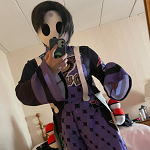

 allister (pokemon shield) g'raha tia (final fantasy) L (death note)
hatsune miku john egbert (homestuck)
damara (homestuck) nagisa (assassination classroom) ramona (scott pilgrim)
ryuko (kill la kill)